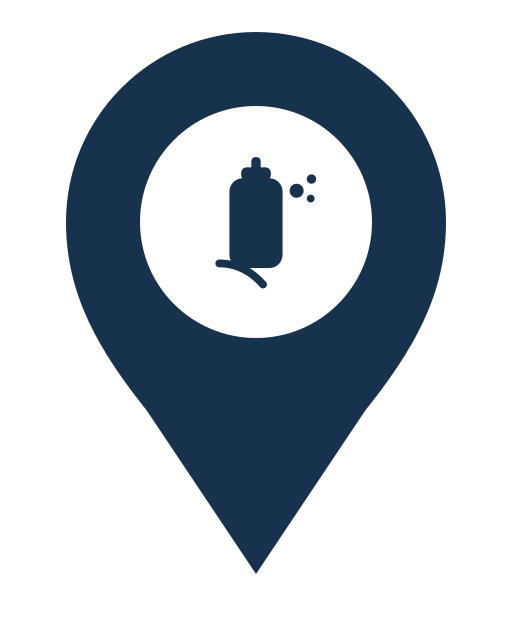

Streetlight
Marker Concepts v4
A reusable location-pin shell plus one-color domain glyphs designed for fast recognition at small map sizes. All exported assets are SVG so they can scale up cleanly without losing detail.
Shared pin system
White badge keeps glyphs readable on map imagery
Domain icons stay single-color
Domain Markers
Potholes
Storm Drain
Sewer Drain
Downed Tree
Encampment
Dumping

Graffiti
Street Sign